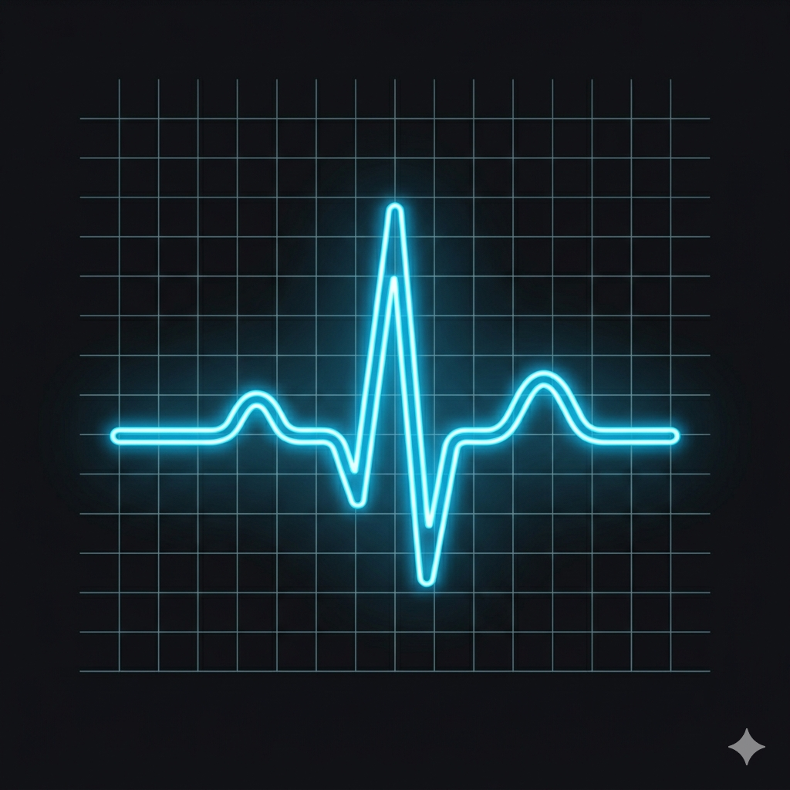

A Midnight-compatible party interrupt & cooldown tracker for World of Warcraft. Every client broadcasts its own casts so your whole party sees every kick in real time.
DownloadWorld of Warcraft/_retail_/Interface/AddOns/. You should end up with a PartyPulse folder (not a nested one)./pulse to open settings.